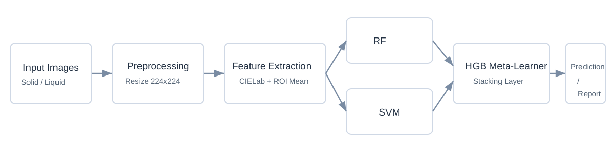

This case study presents a public summary of a private industrial ML initiative focused on ICUMSA color assessment in VHP sugar. Based on controlled image capture and ensemble learning, the work demonstrates a practical alternative to fully lab-centered routines, combining technical rigor with deployment-oriented response time and operational usability.
Business Problem
ICUMSA color is a critical quality parameter in the sugar-energy sector. Conventional spectrophotometric routines are reliable but operationally expensive, slower in day-to-day flows, and dependent on reagents and laboratory handling. The project investigates whether a vision-based ML pipeline can support quicker, non-destructive analysis without discarding quality standards.
My Role
Curated and organized the image dataset for reproducible experiments.
Built and documented the preprocessing flow for standardized inputs.
Defined ROI-based CIELab feature extraction (mean L, a, b descriptors).
Ran comparative model experiments for classification and estimation tasks.
Designed and evaluated a stacking strategy (RF + SVM with HGB meta-learner).
Supported application prototyping for industrial-facing usage (Streamlit context).
Data Acquisition & Preprocessing
Acquisition Setup
Dataset with more than 5,000 labeled real images.
Two capture modes: solid (plate/Petri dish) and liquid (volumetric flask).
Controlled diffuse lighting in a lightbox with neutral background.
Three images per physical sample at different rotation angles.
Multiple smartphone devices used during image acquisition.
Processing Pipeline
Image standardization to 224 × 224 resolution.
Color representation in CIELab space.
Fixed ROI definition for consistent measurement area.
Extraction of mean L, a, b values as compact tabular features.
Preparation steps aligned for both model training and app inference.
Modeling Approach
The study frames prediction as machine learning tasks for ICUMSA assessment, using structured color features from the imaging pipeline. A stacking ensemble is used with Random Forest and SVM as base learners and Histogram Gradient Boosting as meta-learner. Evaluation uses 5-fold cross-validation, and class-imbalance handling/resampling is included in the protocol.

Results
Data Scale
5,000+
Real labeled images used in experiments.
Validation Protocol
5-Fold CV
Consistent evaluation across model comparisons.
Inference Time
< 10s
Practical response/report generation in the app workflow.
Model Selection
Stacking
Selected over isolated baselines/voting in the reported study.
Operationally, the plate-based acquisition method was preferred for agility in routine use.
Operational Impact
The prototype supports floor-level decision support by reducing dependency on fully manual laboratory cycles for each check. The reported economic analysis projects R$ 25,000 in direct annual savings per industrial unit when applied under the study assumptions.
Confidentiality Note
This repository is a public case-study summary. The complete source code, raw datasets, model artifacts, and internal deployment assets remain private due to confidentiality obligations and intellectual property constraints.
Future Work
Future study directions include CNN-based approaches and transfer learning to evaluate potential gains in predictive performance and robustness under broader acquisition conditions.